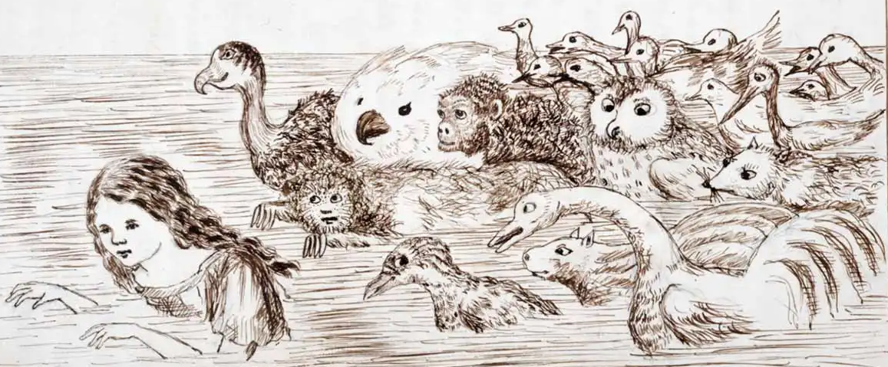
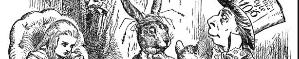

Charles Lutwidge Dodgson (Daresbury, Cheshire, 1832. január 27. – Guildford, 1898. január 14.) írói álnevén Lewis Carroll, angol író, költő, matematikus, anglikán pap és fényképész. Két könyvet írt logikai játékokról. Legismertebb írásai a gyermekirodalom klasszikusai: Alice Csodaországban (Alice's Adventures in Wonderland, 1865), Alice Tükörországban (Through the Looking-Glass, and What Alice Found There, 1872), valamint olyan versek, mint a Snarkvadászat (1876) és a Gruffacsór.
Úgy hallom, járt ön nála még, s beszéltek rólam ott, azt mondta, kedvelt voltaképp, bár úszni nem tudok. Nem mentem, s megsúgták neki - valóban, így van ez! -, viszont, ha ő erőlteti, akkor önnel mi lesz? Én egyet adtam, ők hetet, ön négyet vagy hatot, s bár mind enyém, nem tévedek, ön mindent megkapott. Ha kiderülne valami, nagyon reméli, majd lesz mód minket megmenteni, s elkerüljük a bajt. Ön volt, tudom, az akadály, ön volt kerékkötő, pedig már minden készen áll, tudjuk mind, én meg ő. De ne mondja, hogy szereti, örök titok legyen, én is, ön is, hallgassuk el, ne tudja senki sem.
Nézsonra járt nyalkás brigyók, Turrboltak, purrtak a zepén, Nyamlongott mind a pirinyók, S bröfftyent a Mamsip-lény. "Kerüld a Gruffacsórt, fiam, a foga tép, a karma metsz! Ne járj, hol grémmadár csuhan s a bőszhedt Gyilkanyessz!" Kapta döfke kardját a smorc, rég csűszte már a nyúf vadat - megállt a vén plakány tövén a tamtam-lomb alatt. Állt felhergült eszmék között, s ím Gruffacsór - a szeme láng - hussongva és mortyogva jött a kuszmadt fák iránt. Egy! Kettő! Egy! Kettő! - csihant a döfke penge nyisz-nyasza! Metélte szét, kapta fejét s diadalgott haza. "Hát megölted a Gruffacsórt? Keblemre, fürgeteg fiam! Dicshedj soká! Hujhé, hurrá!" s csuklantott boldogan. Nézsonra járt nyalkás brigyók, Turrboltak, purrtak a zepén, Nyamlongott mind a pirinyók, S bröfftyent a Mamsip-lény.
